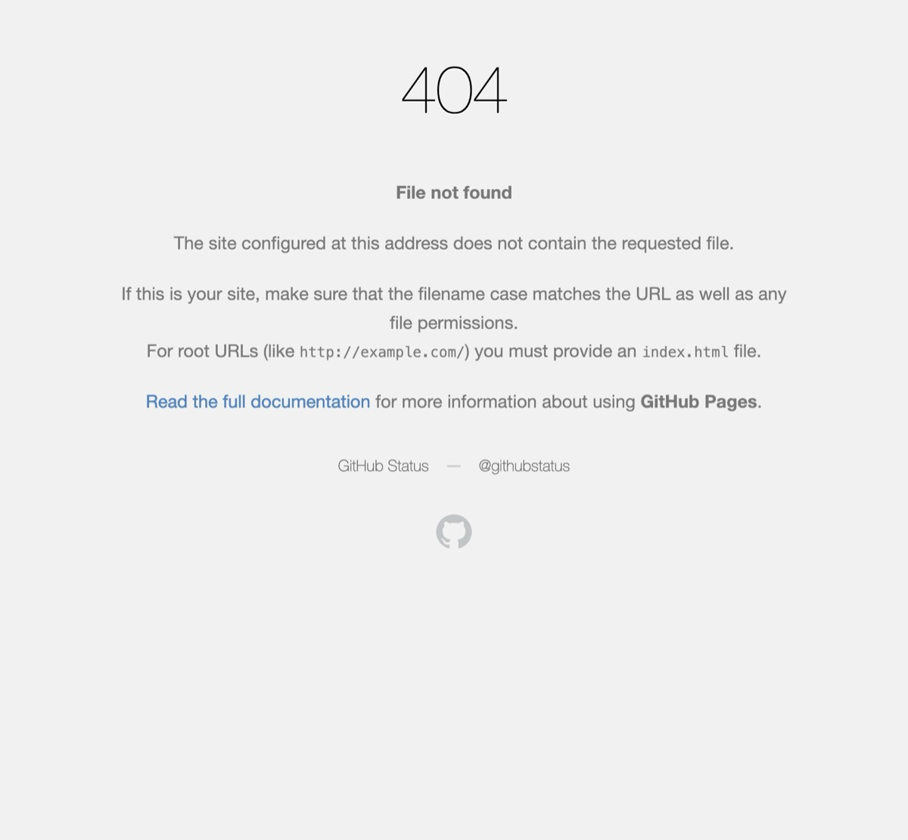
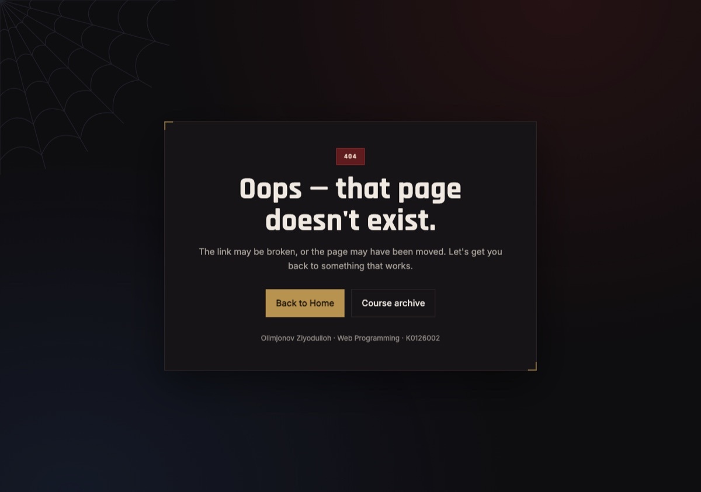

My name, portrait, bio, skills and project links. Responsive, semantic HTML with a light/dark theme toggle and visible keyboard focus.
Week 10 deliverables
Homework + Monday and Friday practice
The homework is split into three public repositories, plus one repository for the Git exercises. Each item links to the live site, the source and the commit history.
01 Homework
A page with my name and the date, published with Pages. It also holds the custom 404.html from the Friday exercises.
The Open Library Book Search app deployed with index.html in the repository root, relative paths and no debug logging.
02 Monday practice: Git
The three exercises from the Monday study guide, done in order in one
repository called git-exercise, followed by a merged
feature branch.
Create your first repository
git-exerciseGoal: initialise a repository, create a file and make the first commit.
$ mkdir git-exercise && cd git-exercise
$ git init
Initialized empty Git repository in .../git-exercise/.git/
$ echo "<h1>Hello Git</h1>" > index.html
$ git status
On branch main
No commits yet
Untracked files:
(use "git add <file>..." to include in what will be committed)
index.html
nothing added to commit but untracked files present (use "git add" to track)
$ git add index.html
$ git commit -m "Initial commit: add index.html"
[main (root-commit) 2bd71ff] Initial commit: add index.html
1 file changed, 1 insertion(+)
create mode 100644 index.html
$ git log --oneline
2bd71ff Initial commit: add index.html
Result: the file appeared as untracked, then became
commit 2bd71ff.
See the commit ↗
Create a branch and merge it
git-exerciseGoal: make a feature branch, add a change, and merge it back into main.
$ echo "body { font-family: sans-serif; }" > style.css
$ git checkout -b feature-style
Switched to a new branch 'feature-style'
$ git add style.css && git commit -m "Add basic stylesheet"
[feature-style 23fd2e8] Add basic stylesheet
1 file changed, 1 insertion(+)
create mode 100644 style.css
$ git checkout main
Switched to branch 'main'
$ ls
index.html
$ git merge feature-style
Updating 2bd71ff..23fd2e8
Fast-forward
style.css | 1 +
1 file changed, 1 insertion(+)
create mode 100644 style.css
$ ls
index.html style.css
Result: style.css disappeared when I
switched back to main and returned after the fast-forward
merge (commit 23fd2e8).
See the commit ↗
Push the repository to GitHub
git-exerciseGoal: create an empty repository on GitHub and push the local commits to it.
$ git remote add origin https://github.com/olimjonovziyodulloh-coder/git-exercise.git
$ git remote -v
origin https://github.com/olimjonovziyodulloh-coder/git-exercise.git (fetch)
origin https://github.com/olimjonovziyodulloh-coder/git-exercise.git (push)
$ git push -u origin main
To https://github.com/olimjonovziyodulloh-coder/git-exercise.git
* [new branch] main -> main
branch 'main' set up to track 'origin/main'.Result: both commits are on GitHub. Open the repository ↗
Merge a second feature branch
git-exerciseGoal: practise the branch-and-merge part of the collaboration workflow from the slides.
$ git checkout -b add-readme
Switched to a new branch 'add-readme'
$ git add README.md && git commit -m "Add README describing the exercise"
[add-readme cf7e59c] Add README describing the exercise
1 file changed, 21 insertions(+)
create mode 100644 README.md
$ git checkout main
Switched to branch 'main'
$ git merge --no-ff add-readme
Merge made by the 'ort' strategy.
README.md | 21 +++++++++++++++++++++
1 file changed, 21 insertions(+)
create mode 100644 README.md
$ git log --oneline --graph --all
* 2f30e3d Merge branch 'add-readme'
|\
| * cf7e59c Add README describing the exercise
|/
* 23fd2e8 Add basic stylesheet
* 2bd71ff Initial commit: add index.html
Result: the branch was pushed and merged with an
explicit merge commit, 2f30e3d.
See the merge commit ↗
03 Friday practice: GitHub Pages
The three exercises from the Friday study guide, done in the
webpro-w9 repository.
Enable GitHub Pages for webpro-w9
webpro-w9Goal: turn on Pages for the repository and confirm the site is live.
$ git init
Initialized empty Git repository in .../webpro-w9/.git/
$ git add index.html && git commit -m "Add index.html with my name and date"
[main (root-commit) 9ff94b1] Add index.html with my name and date
1 file changed, 162 insertions(+)
create mode 100644 index.html
$ git remote add origin https://github.com/olimjonovziyodulloh-coder/webpro-w9.git
$ git push -u origin main
To https://github.com/olimjonovziyodulloh-coder/webpro-w9.git
* [new branch] main -> main
branch 'main' set up to track 'origin/main'.
Settings -> Pages -> Deploy from a branch -> main -> / (root) -> Save
Result: the site is live at
olimjonovziyodulloh-coder.github.io/webpro-w9/
(commit 9ff94b1).
Find and understand a 404 page
webpro-w9Goal: see what a visitor gets for a missing URL, and decide whether it is a good experience.


/webpro-w9/this-does-not-exist.html (before)Is this a good user experience? No. It does not mention my site, gives the visitor no way back to my pages, and looks like an error from GitHub rather than from me. I would explain the problem in plain language and offer a link home, in the same style as the rest of the site.
Result: the missing URL returned GitHub's generic
Page not found screen because the repository had no
404.html yet.
Create a custom 404 page
webpro-w9Goal: add my own 404.html, deploy it, and confirm GitHub Pages serves it for missing pages.
$ ls
index.html
$ git add 404.html
$ git commit -m "Add custom 404 page"
[main cdd81fa] Add custom 404 page
2 files changed, 119 insertions(+)
create mode 100644 404.html
$ git push
To https://github.com/olimjonovziyodulloh-coder/webpro-w9.git
9ff94b1..cdd81fa main -> main

Result: the same URL now shows my own page, with Back to Home and Course archive links. See the commit ↗
This course archive has a custom 404 too
web_programmingThe archive uses the same idea in its own design. Try a page that does not exist:
04 Deployment checklist
- All file paths are relative.
- File names are lowercase (GitHub's servers are case-sensitive).
- No debug
console.log()calls left. - No API keys, passwords or tokens in any public repository.
index.htmlis in each repository root.- Every live URL tested in a private window.